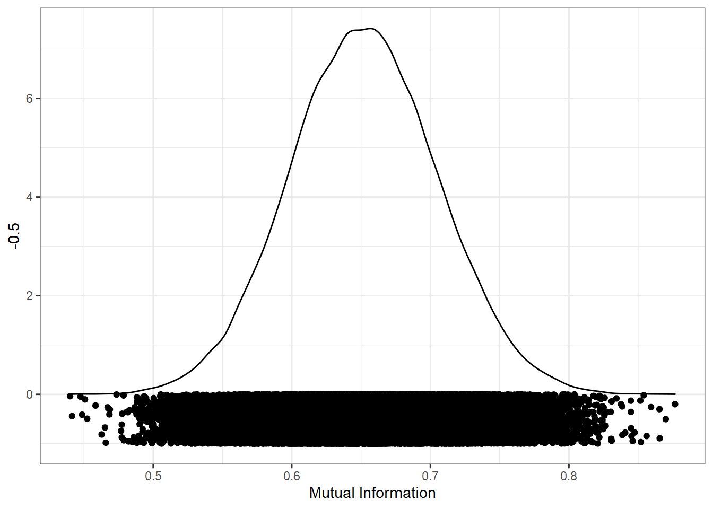

In this example, I show how you can minimise the mutual information between a continuous independent variable, and a continuous confounding variable. This lets you design controlled stimuli with continuous predictors.
library(tidyverse)
library(infotheo) # package with functions for calculating mutual informationstim_pool <- read_csv("stim_pool.csv")Let’s create a list of 100 items, where age varies continuously, but face width is controlled for.
Before we can start with the simulations, we need to make sure our datasets will be reproducible. We can do this by creating a vector of seeds which will be used to select our stimuli. Random seeds make the random number generator give reproducible results. If we want to run 50000 simulations, this code will create a vector of 50000 random seeds for us. Random seed values can be any integer (whole number) we can represent in R. The smallest possible seed is 1, and we can use .Machine$integer.max to get the maximum possible seed number R will let us represent.
I also set the seed first so the result are reproducible, but feel free to comment that out if you would like to get a different result to mine.
set.seed(42) # comment this line out (put # at the start of the line) to get a different result to mine
n_iter <- 50000
seeds <- sample(1:.Machine$integer.max, n_iter)We want to simulate a large number of random samples. On each iteration, we can record the mutual information between face width and age. We can use map_df() to loop over our seeds and record the mutual information values from each iteration in a large dataframe.
Depending on how many iterations we run, this could take a long time.
res <- map_df(seeds, function(seed_i) {
# set the seed, so we can recreate any sample later
set.seed(seed_i)
# get a random sample of 200 items from the pool
sample <- slice_sample(stim_pool, n = 100)
# discretise the face_width values, since the mutinformation methods need discrete data
face_width_disc <- discretize(sample$face_width)
# get the mutual information between age and face width
mi_value <- mutinformation(sample$age, face_width_disc)
# return a row of the dataframe with the seed and overlap value
tibble(seed = seed_i, mi = mi_value)
})We can now look at the distribution of mutual information values from all the random samples. The closer to 0, the less mutual information in the variables, and the better the match. I’ve added the points below the distribution to show the results from each individual sample.
ggplot(res, aes(mi)) +
geom_density() +
geom_point(aes(y = -0.5), position = position_jitter(height=0.5)) +
xlab("Mutual Information")
We can now sort the results by mutual information (ascendingly) to order them by how well-matched the conditions are.
res_sorted <- arrange(res, mi)
res_sorted## # A tibble: 50,000 x 2
## seed mi
## <int> <dbl>
## 1 593758806 0.440
## 2 850299925 0.441
## 3 495235614 0.448
## 4 443280554 0.449
## 5 1581154247 0.451
## 6 692482932 0.452
## 7 216592018 0.458
## 8 1567192811 0.463
## 9 1868145521 0.465
## 10 1301707060 0.466
## # ... with 49,990 more rowsNow we can just extract the best seed as that which has the lowest mutual information.
best_seed <- res_sorted %>%
pull(seed) %>%
first()
best_seed## [1] 593758806Now we know that 593758806 is the best seed, we can use that seed to recreate the stimulus set. This code needs to be identical to our simulation code to ensure we recreate the exact same stimulus set.
set.seed(best_seed)
best_stim <- slice_sample(stim_pool, n = 100)To prove that the stimuli are well-controlled, here is a scatter pot of age (the IV) by face_width (the control variable):
ggplot(best_stim, aes(age, face_width)) +
geom_point() +
geom_smooth()## `geom_smooth()` using method = 'loess' and formula 'y ~ x'We could use the faces in best_stim for our experiment, and be fairly sure that we’ve controlled for face width.
For comparison, here is what the worst stimulus set looks like:
# sort descendingly (highest mutual information first), and extract the top seed
worst_seed <- res_sorted %>%
arrange(desc(mi)) %>%
pull(seed) %>%
first()
set.seed(worst_seed)
# recreate the worst stimulus set
worst_stim <- slice_sample(stim_pool, n = 100)
ggplot(worst_stim, aes(age, face_width)) +
geom_point() +
geom_smooth()## `geom_smooth()` using method = 'loess' and formula 'y ~ x'